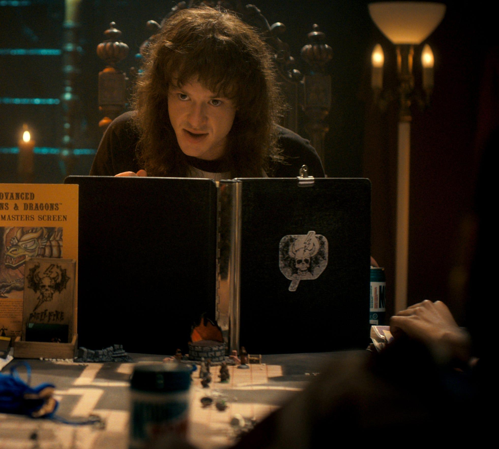
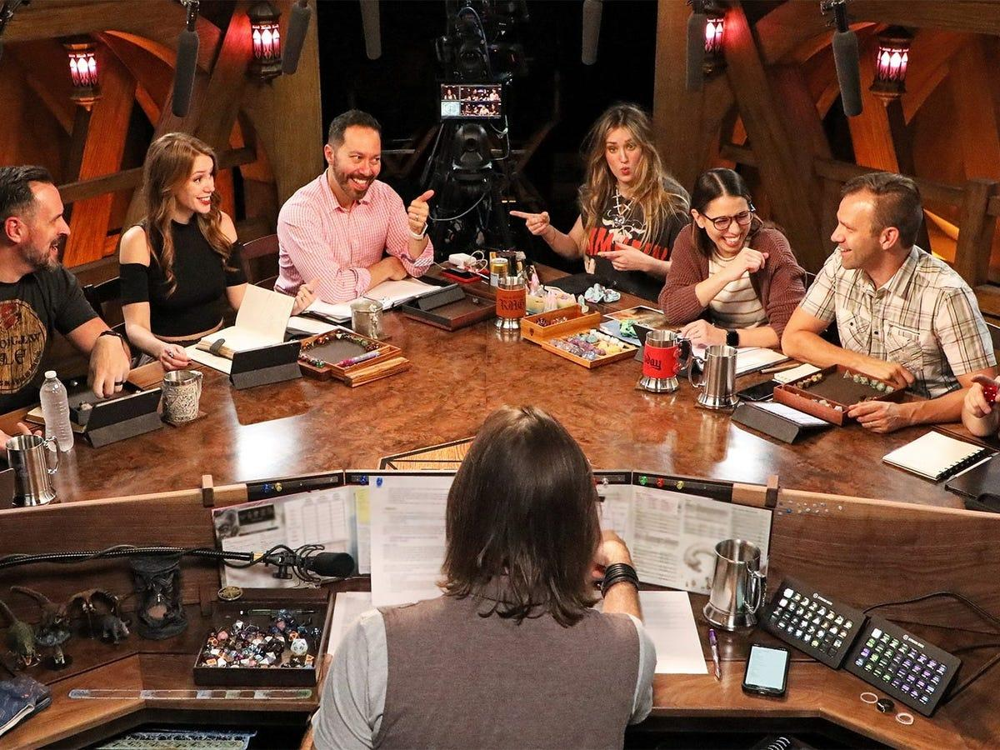
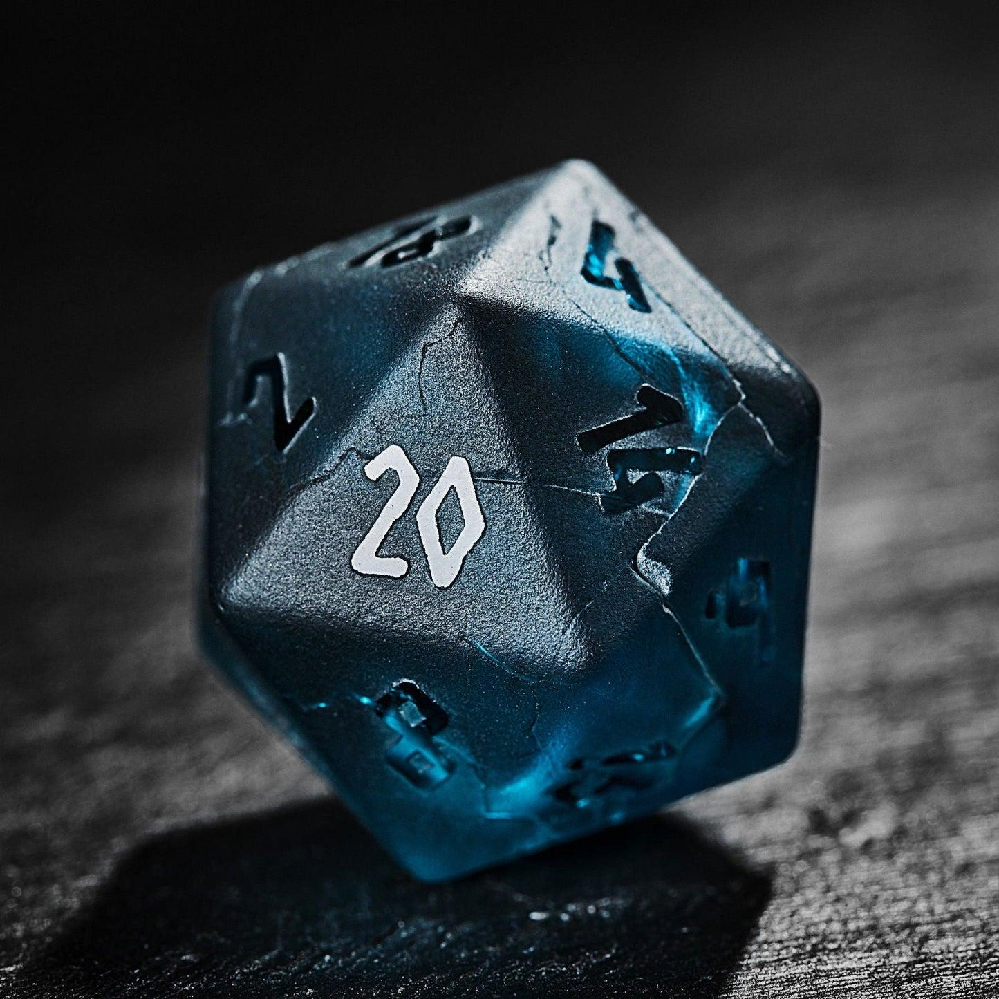

Il grande schermo e giochi da tavolo, il matrimonio perfetto
Nel corso della sua storia, Dungeons and Dragons ha superato i confini del semplice gioco da tavolo, diventando un fenomeno riconoscibile anche nel mondo del cinema e della televisione. Una delle sue prime apparizioni cinematografiche più celebri risale al 1982, quando nel film E.T. l'extra-terrestre di Steven Spielberg un gruppo di ragazzi viene mostrato mentre partecipa a una partita di DnD, contribuendo a rappresentare il gioco come parte integrante della cultura giovanile americana. Non tutte le rappresentazioni, tuttavia, furono altrettanto positive: proprio negli anni Ottanta, il gioco finì al centro della cosiddetta Satanic Panic, un'ondata di preoccupazione morale che attraversò gli Stati Uniti. Alcuni gruppi religiosi e associazioni conservatrici accusarono DnD di incoraggiare pratiche occulte, stregoneria e persino l'adorazione del demonio, interpretando la presenza di demoni, rituali magici, divinità e creature soprannaturali come elementi pericolosi per i giovani. Queste accuse, prive di solide evidenze scientifiche, contribuirono comunque a generare un'enorme controversia mediatica. Curiosamente, proprio questo clima di sospetto ha contribuito a rendere DnD ancora più conosciuto, trasformandolo in un simbolo della cultura alternativa e della controcultura giovanile. Decenni dopo, la serie televisiva Stranger Things ha riportato questa vicenda sotto i riflettori, mostrando come il gioco fosse ancora associato, nell'immaginario americano degli anni Ottanta, a pregiudizi e paure collettive. I protagonisti della serie utilizzano frequentemente DnD per dare un nome alle creature e alle minacce che incontrano: il Demogorgone, il Mind Flayer e Vecna sono infatti mostri e personaggi che richiamano direttamente l'universo del gioco, sebbene la loro rappresentazione televisiva presenti alcune differenze rispetto alle versioni originali. La quarta stagione ha inoltre reso celebre l'Hellfire Club, il gruppo di giocatori guidato da Eddie Munson, diventato uno dei riferimenti più riconoscibili della serie. Anche i simboli di DnD hanno contribuito a costruire un'identità visiva immediatamente riconoscibile. Tra questi spicca il celebre dado a venti facce, il D20, diventato l'emblema universale dei giochi di ruolo e simbolo dell'imprevedibilità delle avventure. Altrettanto iconico è il logo di Dungeons and Dragons, caratterizzato dalla particolare tipografia fantasy e dalla presenza di un drago stilizzato nella lettera iniziale o finale, a seconda della versione grafica. Nel corso degli anni, il marchio ha attraversato numerose trasformazioni, mantenendo però elementi visivi legati alla magia, all'avventura e all'immaginario medievale fantastico. Questi simboli, insieme alle miniature, ai manuali illustrati e ai dadi poliedrici, sono diventati molto più di semplici accessori: rappresentano una vera e propria identità culturale condivisa da milioni di giocatori in tutto il mondo.



Bene, se sei arrivato qui, ma è il tuo primo accesso alla pagina... Allora sei davvero un mago! Ti consiglio però di tornare alla pagina principale
Se invece ti ho accattivato con questi fattacci del mondo di DnD, ti consiglio caldamente di spulciarti anche le Origini di questo fantastico mondo fantasy!